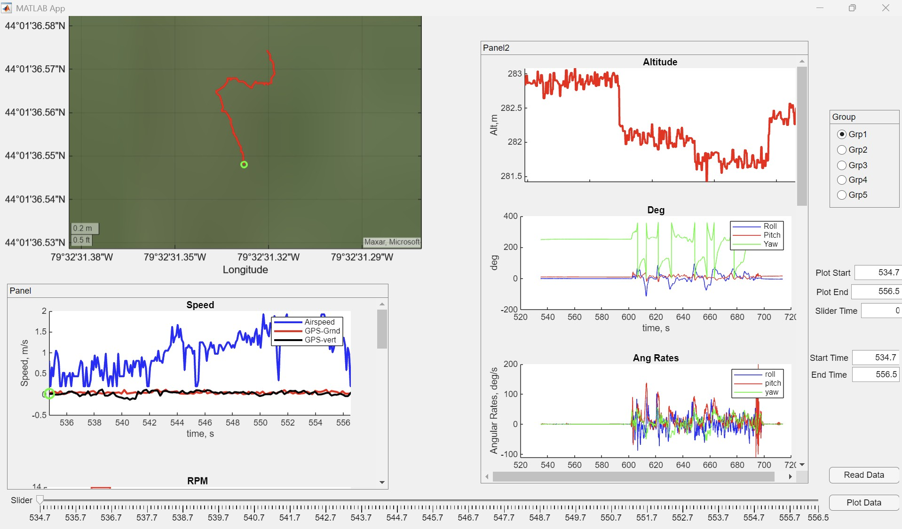

Description
As a summer research student at the University of Toronto Institute for Aerospace Studies (UTIAS), I developed a MATLAB App to support flight data analysis for the AER406 – Aircraft Design course. The app is designed to visualize and analyze telemetry data collected from UAV test flights. It includes interactive plotting of GPS position on a satellite map, plots of parameters such as airspeed, altitude, angular rates, control surface deflections, transmitter inputs, power usage, and flight mode transitions. The app allows users to filter and compare flight segments across multiple aircraft configurations.
Role
I designed and implemented the app using MATLAB App Designer. I wrote all the logic to read ARDUPILOG data, segment flights based on GPS time discontinuities, and dynamically generate UI elements for user-defined time ranges. I handled group-specific logic to account for different control configurations (e.g., conventional, BWB, canard) and normalized both transmitter inputs and actuator outputs accordingly. This project helped me develop skills in GUI development, signal interpretation, and aircraft flight dynamics analysis, and the tool will be used in AER406 to analyze the test flights.